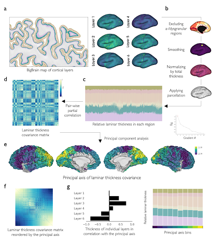

Featured Paper
The spatial arrangement of laminar thickness profiles in the human cortex scaffolds processing hierarchy
By Amin Saberi
We recently published a study on the variation of cortical laminar structure in the BigBrain dataset. The cerebral cortex consists of six cortical layers which are horizontally superimposed stripes of gray matter with characteristic features such as size, type and density of the neurons. These layers show spatial variations in thickness and cytoarchitecture across the neocortex, which is thought to support function through enabling targeted corticocortical connections. We studied the organization of laminar profiles across the cortical mantle and its relevance to cortical hierarchy and inter-regional connectivity to further understand the relationship between human cortical structure and function.
The six cortical layers of the BigBrain atlas have been previously segmented using a convolutional neural network by Dr. Wagstyl and colleagues and is openly available in the BigBrain dataset. We leveraged on these maps to describe a data-driven axis of laminar thickness covariance by quantifying the inter-regional covariation of laminar thickness in the BigBrain while correcting for the effect of cortical folding. After a few preprocessing steps we used a dimensionality reduction approach on these maps and identified a principal axis of laminar thickness covariation in the cortex which showed a shift from the dominance of supragranular towards infragranular layers thickness from occipital to lateral frontal areas (see figure).
We were next interested in understanding how this variation of laminar structure relates to cortical function. The ‘structural model’ is a theory of cortical organization which suggests that variations of cortical cytoarchitecture scaffold the laminar pattern and strength of inter-regional connections. In the context of this model, we evaluated how laminar thickness covariation relates to asymmetry- and laminar-based cortical hierarchy, as well as likelihood and strength of inter-regional connectivity. We found that the supra- to infragranular shift from occipital to frontal regions was co-aligned with cortical hierarchy, defined either based on the asymmetry of afferent and efferent connections in the human cortex, or the laminar pattern of connections in the macaque cortex. In addition, we observed a higher likelihood and strength of connections between regions with similar patterns of laminar thickness, supporting the principle of “similar prefers similar” in cortical wiring and the ‘structural model’.
Last, we focused on the question of potential origins of laminar structure variations. The current prevailing idea is that the regional variability of laminar structure and its association to connectivity have developmental origins. We observed findings in favor of this hypothesis by showing the correlation of laminar thickness covariance in BigBrain with the population-level inter-regional structural covariance matrix as well as subject-level longitudinal maturational coupling of cortical regions. This indicated that regions with similar laminar structure are likely to be affected by similar maturational and genetic effects.
Overall, we described an axis of laminar thickness covariation in the BigBrain, which characterized a structural shift from supra- to infragranular layer thickness. This shift was co-aligned with the cortical processing hierarchy, with infragranular-dominant regions positioned higher across the hierarchy. In addition, regional variation of laminar thickness in the cortex was related to connectivity as well as maturational and genetic patterning of the cortex. Using the BigBrain dataset of cortical layers, our study extends over a century of research on cortical cytoarchitectural variation, introducing a major advance over previous approaches that have often relied on qualitative observations, or overlooked the layered structure of the cortex.
If you are interested to learn more please read the full preprint at https://www.biorxiv.org/content/10.1101/2023.05.02.539045v1.full. In addition, feel free to use our code and data published in Github (https://github.com/amnsbr/laminar_organization) and as a Docker image (https://hub.docker.com/r/amnsbr/laminar_organization) with fully reproducible Jupyter notebooks.
Figure 1 from the paper. Laminar thickness covariance and its principal axis. a) The laminar thickness maps based on the post-mortem histological atlas of BigBrain. b,c) For each cortical layer, the a-/dysgranular regions were excluded, the thickness map was smoothed using a disc, normalized by the total thickness, and parcellated. d) The LTC matrix was created by calculating the pairwise partial correlation of relative thickness across layers and between regions. e) The main axis of laminar thickness covariance (LTC G1) was calculated by principal component analysis. f) LTC G1 reorders the LTC such that closer regions on this axis have similar LTC patterns. g) LTC G1 characterized a shift of infra- to supragranular dominance.